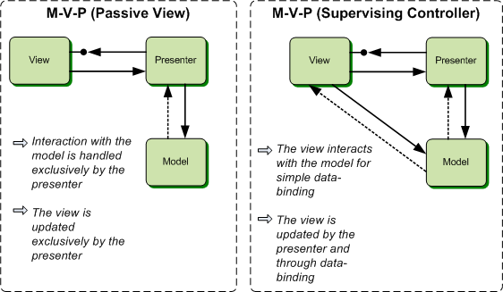

Effective Model View Presenter
... Not a beginner tutorial
Gurus
Lots of ideas taken from discussions with the people who use this daily.
- Raquel Alvarez Banos
What Is M-V-P?
A screen and components with all application specific behavior extracted into a controller so that the widgets have their state controlled entirely by controller.
Benefits
- Excellent fit for Agile developement
- Deep testability with low execution overhead
- Fewer mistakes
- Unequalled quality from day-one
- Scales well as complexity increases
- Much easier to extend and maintain product
Drawbacks
- Overhead - Slower initial start
- Developer rigour and skill
Tip 1: M-V-P is Back to front
Front to back: “Take the UI mockups and implement all screens in the designer as your first task”
This is what happens...

Back to front: Implement features as story points in an Agile way. Small stories with working code and tested and refactored code per iteration. writing UI designer code is very last activity.
Tip 2: Testing Code Smell
If you can't test it your design is wrong
Tip 3: Concrete View Code Smell
Concrete views are stupid. The presenter must be doing 100% of the presentation logic. Views must be extremely lean and very dumb.
Tip 6: Models Should Be Abstract Too
Logical conclusiong of avoiding violating Tip 2

For example, one cannot directly commuicate with the ADS. There is a required abstraction as a WorkspaceSource that is needed.
... An implemenation tip is that Models do not take ownership of Presenters
Missing Slides
Items I didn't have time to write slides for...
- Nested M-V-P in M-V-P and View Commands
- Adding M-V-P to a UI with significant existing view logic - hybrid mode (SliceViewer)
- View and Model Factories. When and how.